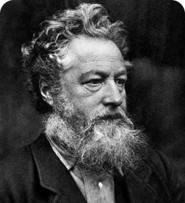
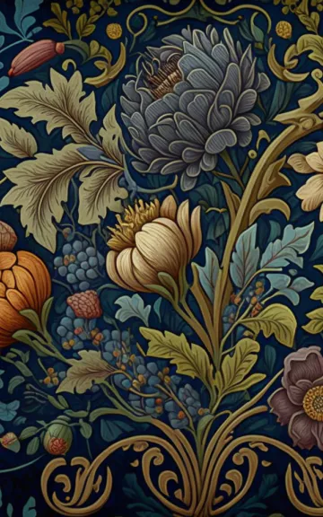

William Moris
William Morris est un artiste,designer,écrivain et socialiste britannique connu pour son travail dans la création d'objets de design et de décoration de maison, ainsi que pour ses contributions à l'arts and crafts movement en Angleterre.